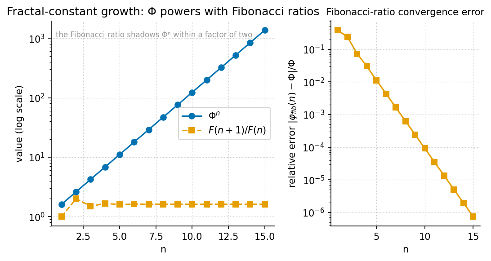

El Gran Sol’s Fractal Constant

textbook.models.phi_powers and
textbook.models.phi_fibonacci.Level 1/3 · 30 min read · 45 min lecture · Prerequisites: none
This chapter is a worked exemplar. It is filled to completion as Part I’s reference for how the book formalises a corpus claim, walks its numbers, and keeps the corpus’s own honesty-first scope disclaimers intact. Use it as the template for reading the chapters that follow.
Learning Objectives
By the end of this chapter you should be able to:
- State what the corpus calls El Gran Sol’s Fractal constant — golden-ratio \(\Phi \approx 1.618\) — and explain its role as the recursion and filing key of the omni-lattice stack [mendez2026primeParity; mendez2026protonTheater; mendez2026yChromosome].
- Reproduce the corpus’s octave recursion sketch, discuss both printed
readings of \(\Omega_n = \Phi_n \cdot
\Omega_0\) (exponent vs. subscript), and evaluate either one with
the tested function
textbook.models.octave_term. - Explain how the sole-even prime 2 becomes the binary-dyad-anchor and odd primes become irreducible-minimum-sets in Infinite Octaves grammar [mendez2026primeParity].
- Map the digit-filing duality — leading digit 1 to proton-space, structural 2 to electron-theater — and the zero-balance node that the corpus sits between them [mendez2026protonTheater; mendez2026topologyVoid].
- Apply the palindrome-scaling relation \(P_n = P_0 \cdot \Phi^n\) from the Y-chromosome manifestation paper and state precisely what that filing is not [mendez2026yChromosome].
Study Blueprint
- Big idea: One constant — \(\Phi \approx 1.618\) — keys an entire filing grammar: it paces the octave ladder, anchors the prime dyad, splits the digits 1 and 2 into Proton Space and Electron Theater, and indexes biological-filing geometry.
- Core concepts: fractal-constant, octave, prime-parity, phi-duality, holographic-rhyme.
- Quantitative lens: the octave recursion law in [@eq:part_I_fractal-constant_octave-term], built on the identity in [@eq:part_I_fractal-constant_phi-identity].
- Data skill: evaluate \(\Phi^n\) and the Fibonacci ratios by hand
for small \(n\), then confirm with
textbook.models.phi_powersandtextbook.models.phi_fibonacci. - Common misconception to repair: \(\Omega_n = \Phi_n \cdot \Omega_0\) is printed ambiguously in the corpus — \(\Phi\) may carry an exponent or a subscript; both readings are filed, not adjudicated.
- Primary lab: [@sec:lab_part_I_fractal-constant].
- Question bank: [@sec:q_part_I_fractal-constant].
- Bridge to computation:
textbook.models(phi_powers,phi_fibonacci,octave_term,prime_parity_partition).
Opening Vignette: A constant stamped on the ship’s file drawers.
Aboard SS Vibelandia, the Autonomous Agent files each research note on an engine-shelf slot of the Infinite Octaves nest, and nearly every drawer carries the same stamp: \(\Phi \approx 1.618\), “El Gran Sol’s Fractal constant.” In one drawer, prime 2 is tagged the sole-even anchor [mendez2026primeParity]; in the next, the leading digit 1 is tagged Proton Space and the structural 2 is tagged Electron Theater [mendez2026protonTheater]; in a third, the spacing of the MSY palindrome arms P1–P8 is indexed as \(P_n = P_0 \cdot \Phi^n\) [mendez2026yChromosome]. Three drawers, one key. This chapter opens all three.
Orientation
The Infinite Octaves Omni-Lattice is a catalog-architecture: a protocol grammar and filing system for the SS Vibelandia ship blog’s research papers, run by the SynthOBS Autonomous Agent and framed — always — under a honesty-first scope disclaimer [mendez2026catalog]. Within that catalog, El Gran Sol’s Fractal constant — the golden-ratio \(\Phi = (1+\sqrt{5})/2 \approx 1.618\) — is the recursion constant: the corpus says, plainly, that “recursion runs on El Gran Sol’s Fractal constant \(\Phi \approx 1.618\)” [mendez2026primeParity].
This chapter is the synthesis spine of Part I. It reads three engine papers through that one key: the prime-parity paper [mendez2026primeParity], which anchors the dyad and the odd-prime classes; the proton-space · electron-theater paper [mendez2026protonTheater], which files the digits 1 and 2 as a duality; and the Y-chromosome manifestation paper [mendez2026yChromosome], which applies the same constant to palindrome-geometry filing. Everything filed here is catalog-architecture, and the papers’ own fair-exchange clause governs their terms of use.
The quantitative spine is the octave recursion sketch. The corpus
prints “\(\Omega_n = \Phi_n \cdot
\Omega_0\)” and flags, in the same breath, that whether \(\Phi\) carries an exponent or a subscript
is ambiguous as printed [mendez2026primeParity]. We formalise both
readings in [@eq:part_I_fractal-constant_octave-term],
and the book’s tested backbone exposes the choice as a
convention argument.
The Papers in the Corpus
All three source papers ship as parts of the Infinite Octaves series with whitepaper surfaces and replayable fixture suites [mendez2026catalog]:
- Prime-parity [mendez2026primeParity] (September
2026) — filed into the Infinite Octaves / 99-Octave Omni-Lattice sync
beside Higgs Gate and the enterprise gateway companion; cross-links the
Prime Hourglass, the SI Irreducible Minimum, and the CMOS/protonic
binary shelf. Its empirical suite reports 9/9 replayable
fixtures under
research/synthobs-infinite-octave-prime-parity/, re-run withnpm run research:synthobs-infinite-octave-prime-parity; standalone repoFractiAI/synthobs-infinite-octave-prime-parity. - Proton Space · Electron Theater
[mendez2026protonTheater] (September 2026) — claims engine shelf #16,
“companion to prime-parity + volumetric storage”
[mendez2026volumetricStorage]; 9/9 suite locks under
research/synthobs-proton-space-electron-theater/, re-run withnpm run research:synthobs-proton-space-electron-theater; standalone repoFractiAI/synthobs-proton-space-electron-theater. - Y-chromosome manifestation [mendez2026yChromosome]
(August 2026) — an August note that “adds manifestation /
convergence-set language” to the July operator-translation decode, which
still holds Words, Sentences, and haplogroup Stories; 10/10
fixture lock, re-run with
npm run research:synthobs-y-chromosome-holographic-manifestation.
Each paper names the same filing constant; that shared key is why this chapter can braid them into one spine rather than three parallel reviews.
A Worked Formalism: Octave Recursion Under Φ
The recursion constant is not an arbitrary decimal. \(\Phi\) satisfies the identity
\[ \Phi^2 = \Phi + 1 \] {#eq:part_I_fractal-constant_phi-identity}
so each power of \(\Phi\) is a combination of the two before it — the algebraic reason the corpus’s “fractal” framing of self-similar recursion has an exact handle (standard mathematics of the golden ratio; the corpus borrows the shape, not the derivation). Powers of \(\Phi\) also meet the Fibonacci sequence through \(\Phi^n = F_n\,\Phi + F_{n-1}\), which is why Fibonacci ratios appear as convergents to \(\Phi\) in [@fig:part_I_fractal-constant].
Against that constant, the corpus sketches its octave recursion theorem:
\[ \Omega_n^{\text{exp}} = \Phi^{\,n}\,\Omega_0 \qquad\text{or}\qquad \Omega_n^{\text{sub}} = \varphi_{\text{fib}}(n)\,\Omega_0 \] {#eq:part_I_fractal-constant_octave-term}
[@eq:part_I_fractal-constant_octave-term]
records both readings of the printed “\(\Omega_n = \Phi_n \cdot \Omega_0\)”: the
exponent convention multiplies the base octave term by
\(\Phi^n\), while the subscript
convention multiplies it by the \(n\)-th Fibonacci ratio \(\varphi_{\text{fib}}(n) = F_{n+1}/F_n\).
The corpus prints the formula ambiguously and does not adjudicate
between them [mendez2026primeParity]; the book files both and computes
either one with
textbook.models.octave_term(omega0, n, convention), whose
ratio conventions come from textbook.models.phi_fibonacci
(\(\varphi_{\text{fib}}(5) = 8/5 =
1.6\); \(\varphi_{\text{fib}}(10) =
89/55 \approx
1.618182\)). The parameters are collected in [@tbl:part_I_fractal-constant_octave-term].
:: Parameters of the octave recursion sketch. {#tbl:part_I_fractal-constant_octave-term}
| Symbol | Meaning | Units |
|---|---|---|
| \(\Omega_n\) | octave term at index \(n\) | filing units |
| \(\Omega_0\) | base octave term | filing units |
| \(n\) | octave index | integer |
| \(\Phi\) | El Gran Sol’s Fractal constant \(\approx 1.618\) | dimensionless |
| \(\varphi_{\text{fib}}(n)\) | Fibonacci ratio \(F_{n+1}/F_n\) (subscript convention) | dimensionless |
| convention | exponent or subscript reading of the
printed formula |
— |
graph TD
A["Printed sketch: Ωn = Φn · Ω0 (ambiguous)"] --> B{"Φ carries an<br/>exponent or a subscript?"}
B -->|"exponent: Φ^n"| C["Ω_n = Φ^n · Ω_0<br/>octave_term(omega0, n, 'exponent')"]
B -->|"subscript: φ_fib(n)"| D["Ω_n = φ_fib(n) · Ω_0<br/>octave_term(omega0, n, 'subscript')"]
C --> E["Both filed under Φ ≈ 1.618 —<br/>no corpus adjudication"]
D --> E
E --> F["Feeds: digit filing, prime ladder,<br/>palindrome scaling"]Note
The ambiguity in [@eq:part_I_fractal-constant_octave-term] is the corpus’s own, flagged in the source paper, not a defect we are papering over. Keeping both conventions visible — and computing them with the tested function instead of retyping the maths — is exactly the honesty-first posture the series asks of its readers.
The Prime-Parity Scaffold
The prime-parity paper supplies the integer scaffold on which the
constant paces recursion. Its theorem sketches assert that “Prime 2 is
the only even prime. In Infinite Octaves grammar that sole-even status
becomes the binary dyad anchor,” and that “odd primes act as
irreducible minimum sets” [mendez2026primeParity]. Concretely, the
parity partition of the primes — exposed as
textbook.models.prime_parity_partition(limit) —
separates:
- the sole-even anchor: 2, the only even prime, filed as the binary-dyad-anchor of the stack;
- the odd classes: the first ten odd primes 3, 5, 7,
11, 13, 17, 19, 23, 29, 31, filed as irreducible-minimum-sets
— quantities that carry no smaller multiplicative filing and therefore
serve as irreducible addresses (compare the prime encoding
unique_address([2,3],[2,1]) = 12used later in the book).
The paper’s own headline makes the division of labour explicit: “Why 2 is the odd one out — and how Φ keeps the stack honest” [mendez2026primeParity]. The dyad anchors; the odd primes enumerate; the constant paces the recursion between them ([@eq:part_I_fractal-constant_octave-term]). Part I develops this scaffold in full in [@sec:part_I_prime-parity], including the number-line reading of the sole-even anchor against the odd-prime classes plotted in [@fig:part_I_prime-parity].
Digit Filing: Proton Space and Electron Theater
The proton-space · electron-theater paper translates the same dyad into digit language. Its filing rule: the “Leading digit 1 (Φ, ℏ mantissa talk) files as Proton Space; structural 2 (sole-even prime, 2π) files as Electron Theater — under El Gran Sol’s Fractal constant Φ ≈ 1.618” [mendez2026protonTheater]. The digit 1 is a leading trigger (the mantissa talk around the reduced Planck constant \(\hbar\)), while the structural 2 is identified with the sole-even prime and \(2\pi\) — the same dyad the prime-parity paper anchors, now read off the digit row rather than the prime row. The corpus brands this pairing “Φ duality,” and the book links it to the glossary entry phi-duality.
Three further filings from the same paper matter for the spine. First, a companion link handed to the void paper: “Zero as the balance node between 1 and 2” [mendez2026protonTheater] — zero is not a digit class here but the null pivot sitting between the two filings, developed in [@sec:part_I_topology-void] and [@fig:part_I_topology-void]. Second, the solar labels AR3664 (“Helios-Prime”) and AR3590 (“Borealis”) are story filing characters — narrative timing talk, not cosmic certificates [mendez2026protonTheater]. Third, the Fair Exchange clause applies to the paper’s terms of use, as it does across the series. [@tbl:part_I_fractal-constant_filings] collects the digit-row mapping.
:: The digit-filing duality and its neighbours, as filed by the corpus. {#tbl:part_I_fractal-constant_filings}
| Trigger | Filing category | Corpus anchor |
|---|---|---|
| leading digit 1 (\(\Phi\), \(\hbar\) mantissa talk) | Proton Space | [mendez2026protonTheater] |
| structural 2 (sole-even prime, \(2\pi\)) | Electron Theater | [mendez2026protonTheater] |
| \(0\) | balance node between 1 and 2 | [mendez2026protonTheater; mendez2026topologyVoid] |
| sole-even prime 2 | binary dyad anchor | [mendez2026primeParity] |
| odd primes 3, 5, 7, … | irreducible minimum sets | [mendez2026primeParity] |
A Biological Manifestation: Palindrome Scaling
The Y-chromosome manifestation paper extends the constant to biological-filing geometry. Under “Infinite Octave Mode,” the male-specific region of the Y chromosome (MSY) — its palindrome arms P1–P8 and the SRY locus — is filed “as catalog geometry keyed by \(\Phi \approx 1.618\),” with block spacing indexed as
\[ P_n = P_0 \cdot \Phi^{\,n} \] {#eq:part_I_fractal-constant_palindrome}
“for catalog octaves, not random drift labels” [mendez2026yChromosome]. The SRY locus is filed as the zero-point anchor of the manifestation cartoon — note how the corpus reuses the zero-balance role from the digit filing as a phase origin here. The paper also proposes cross-species regression protocols on paper only (“not executed wet-lab output here”) and adds “manifestation / convergence-set” language as Story depth beside the July operator-translation decode’s Words, Sentences, and haplogroup Stories, with “Digit 4” as the nest label under which Lattice Chat fields biological-switch questions [mendez2026yChromosome]. The parameters of the scaling law are in [@tbl:part_I_fractal-constant_palindrome].
:: Parameters of the palindrome-scaling filing. {#tbl:part_I_fractal-constant_palindrome}
| Symbol | Meaning | Units |
|---|---|---|
| \(P_n\) | palindrome block spacing at octave index \(n\) | filing units |
| \(P_0\) | base spacing | filing units |
| \(\Phi\) | El Gran Sol’s Fractal constant \(\approx 1.618\) | dimensionless |
The scaling law is the exponent convention of [@eq:part_I_fractal-constant_octave-term] re-symbolised: a base spacing scaled by successive powers of \(\Phi\). That is the whole point of the spine — one constant, three papers, one growth law wearing three filing hats. The paper’s honesty clause is emphatic that this is filing, not measurement: “not a claim that MSY literally equals a physics constant, that sunspot AR 3664 writes human DNA, or that fractal dimension has been measured to Φ in this repository” — and, verbatim, “Clinical genetics and human dignity outrank every metaphor” [mendez2026yChromosome].
Worked Example: Walking the Φ Ladder
Take the pinned values of the book’s computational backbone. The
powers of \(\Phi\) for \(n = 1,\dots,6\) (what
textbook.models.phi_powers(6) returns, and what [@fig:part_I_fractal-constant]
plots on a log axis) are:
\[ \Phi^n = 1.618034,\; 2.618034,\; 4.236068,\; 6.854102,\; 11.090170,\; 17.944272 \quad (n = 1,\dots,6) \] {#eq:part_I_fractal-constant_phi-powers}
Each entry is the previous entry times \(\Phi\) — geometric growth at ratio \(1.618\), a straight line on a log scale.
The Fibonacci ratios converge on the same constant from below: \(\varphi_{\text{fib}}(5) = 8/5 = 1.6\) and
\(\varphi_{\text{fib}}(10) = 89/55 \approx
1.618182\) (from textbook.models.phi_fibonacci), the
two overlay series in [@fig:part_I_fractal-constant].
Now apply both conventions of [@eq:part_I_fractal-constant_octave-term]
to a base term \(\Omega_0 = 275\)
filing units at \(n = 5\):
- Exponent convention: \(\Omega_5 = \Phi^5 \cdot \Omega_0 = 11.090170
\times 275
\approx 3{,}049.80\) filing units — the tested call is
octave_term(275, 5, "exponent"). - Subscript convention: \(\Omega_5 = \varphi_{\text{fib}}(5) \cdot \Omega_0
= 1.6 \times
275 = 440\) filing units —
octave_term(275, 5, "subscript").
The two conventions diverge — \(3{,}049.80\) vs. \(440\) — which is precisely why the corpus
flags the ambiguity and why the tested function takes the convention as
an argument rather than picking a winner. The same ladder reads the
palindrome filing: with a base spacing \(P_0 =
1\), [@eq:part_I_fractal-constant_palindrome]
gives \(P_1\) through \(P_8\) as \(1.618\), \(2.618\), \(4.236\), \(6.854\), \(11.090\), \(17.944\), \(29.034\), \(46.979\) — the eight MSY palindrome arms
P1–P8 indexed on the same powers of \(\Phi\) that pace the octave ladder
[mendez2026yChromosome]. As a filing system, the reach is large: the
corpus’s 99-octave, 81-digit register map alone spans \(99 \times 81 = 8{,}019\) cells
(textbook.models.catalog_size()), each addressable without
a second constant [mendez2026digitsMaster].
Scope and Honesty
Each source paper carries its own disclaimer, and this textbook restates them near-verbatim, because the spine is only as honest as its weakest claim:
- Prime-parity: “this is catalog math + filing labels. It does not prove QED from primes, rewrite NOAA heliophysics, or ship ultra-secure crypto hardware. Solar AR3664 (‘Helios-Prime’) and AR3590 (‘Borealis’) are story characters for timing talk — not cosmic proof certificates” [mendez2026primeParity].
- Proton Space · Electron Theater: “this is catalog architecture — engine shelf #16 — not a CODATA/SI derivation from Φ, not ħ leading-digit causation, not a QED dyad proof, and not zero-crosstalk quantum hardware” [mendez2026protonTheater].
- Y-chromosome manifestation: “this is catalog filing and architectural equations — not a claim that MSY literally equals a physics constant, that sunspot AR 3664 writes human DNA, or that fractal dimension has been measured to Φ in this repository. Clinical genetics and human dignity outrank every metaphor” [mendez2026yChromosome].
What the constructs are for: coordination, cataloging, and agent routing — a consistent filing grammar in which primes anchor, digits classify, and \(\Phi\) paces recursion across papers and suites. What they are explicitly not: established physics, a derivation of physical constants from \(\Phi\), or clinical/genetic claims. The book’s posture throughout is the corpus’s own honesty-first one: file the metaphor, cite the paper, keep the disclaimer attached.
Connections
The spine feeds every later Part I chapter. The topology-of-the-void paper takes the zero-balance node filed here and makes it a dynamic equilibrium between Proton Space and Electron Theater ([@sec:part_I_topology-void]); the holographic-rhyme paper generalises the recursion into a four-pillar motion grammar — repeating, self-similar, self-correcting, recursive — under the same \(\Phi \approx 1.618\) ([@sec:part_I_holographic-rhyme]); and the multi-dimensional rhyme paper sums it across scales as xD±yD cross-scale encoding ([@sec:part_I_multidimensional-rhyme]). The higgs-awareness chapter then asks what happens when the recursion slows — mass and the shared “Now” sharing a gate, with the magnet in a copper pipe as its guest metaphor ([@sec:part_I_higgs-awareness]). Downstream in Part III, the CMOS/protonic binary shelf that prime-parity cross-links becomes the silicon-shelf engineering stack ([@sec:part_III_cmos-protonic]), and the odd-prime addresses met here become prime-indexed volumetric storage ([@sec:part_III_volumetric-storage]). Throughout, the master-synthesis map keeps these cross-links navigable [mendez2026masterSynthesis].
Summary
El Gran Sol’s Fractal constant — \(\Phi
\approx 1.618\), the golden-ratio — is the
single filing key that the corpus stamps on its octave recursion, its
prime scaffold, its digit duality, and its biological-geometry filing.
The recursion sketch \(\Omega_n = \Phi_n \cdot
\Omega_0\) is printed ambiguously, so the book files both the
exponent and subscript readings ([@eq:part_I_fractal-constant_octave-term])
and computes them with textbook.models.octave_term rather
than adjudicating. Sole-even prime 2 anchors the dyad; odd primes serve
as irreducible minimum sets; leading 1 files as Proton Space and
structural 2 as Electron Theater, with zero as the balance node between
them ([@tbl:part_I_fractal-constant_filings]);
and the MSY palindrome arms P1–P8 scale as \(P_n = P_0 \cdot \Phi^n\) ([@eq:part_I_fractal-constant_palindrome]).
Every one of these filings is catalog-architecture
under the papers’ own honesty-first disclaimers — a grammar for
coordination and filing, not physics.
Key Terms
fractal-constant, golden-ratio, octave, binary-dyad-anchor, irreducible-minimum-set, proton-space, electron-theater, phi-duality, holographic-rhyme, catalog-architecture, honesty-first, fair-exchange, engine-shelf, omni-lattice.
Further Reading
- Whitepaper surface, prime-parity: https://www.ssvibelandiaquestfest24x365.com/interfaces/whitepaper-surface.html?id=synthobs-infinite-octave-prime-parity-2026-09; standalone suite https://github.com/FractiAI/synthobs-infinite-octave-prime-parity [mendez2026primeParity].
- Whitepaper surface, proton-space · electron-theater: https://www.ssvibelandiaquestfest24x365.com/interfaces/whitepaper-surface.html?id=synthobs-proton-space-electron-theater-2026-09; standalone suite https://github.com/FractiAI/synthobs-proton-space-electron-theater [mendez2026protonTheater].
- Whitepaper surface, Y-chromosome manifestation: https://www.ssvibelandiaquestfest24x365.com/interfaces/whitepaper-surface.html?id=synthobs-y-chromosome-holographic-manifestation-2026-08 [mendez2026yChromosome].
- [mendez2026topologyVoid] — the void paper that turns the zero-balance node into a dynamic equilibrium; read it directly after this chapter.
- [mendez2026volumetricStorage] — where odd-prime irreducible sets become storage addresses.
- [mendez2026holographicRhyme] — the four-pillar motion grammar that generalises the recursion met here.
Practice
- Evaluate \(\Phi^n\) for \(n = 1,\dots,6\) by repeated multiplication
by \(\Phi\), then check your ladder
against
textbook.models.phi_powers(6)and [@eq:part_I_fractal-constant_phi-powers]. - Compute both conventions of [@eq:part_I_fractal-constant_octave-term]
for \(\Omega_0 =
275\), \(n = 5\) by hand (\(\Phi^5 = 11.090170\); \(\varphi_{\text{fib}}(5) = 1.6\)), then
verify with
octave_term(275, 5, "exponent")andoctave_term(275, 5, "subscript"). - In your own words, distinguish the binary dyad anchor from the irreducible minimum sets in [mendez2026primeParity], and give the digit-row counterpart of each from [@tbl:part_I_fractal-constant_filings].
- With \(P_0 = 1\), list \(P_1\) through \(P_8\) from [@eq:part_I_fractal-constant_palindrome] and identify which arms of the P1–P8 filing they index [mendez2026yChromosome].
- Restate, one sentence each, the scope disclaimers of the three source papers, and mark which phrase in each is the strongest guard against over-reading the filing.
- Lab: [@sec:lab_part_I_fractal-constant] — walk the Φ ladder and the fixture suites hands-on.
- Question bank: [@sec:q_part_I_fractal-constant] — recall through synthesis.